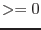

| Parameter | Mand | Type | Default | Constraints |
| table | yes | name of existing table | | input table specifier |
a table specifier which must point to a table in
a data set.
It must be in either of the three forms setname, setname+tableid or
setname[tableid] where setname must be the name of an existing
data set and
tableid an identifier of a table in that data set.
If the first form, setname, is used, the table data are sought in the
first block of the named data set. tableid can either be an
identifier starting with a letter which must then be the name of a table in
the specified data set or a simple number which is directly interpreted as a
block sequence number (starting from 1).
|
| expression | yes | string | | valid boolean expression according to
above syntax rules |
the boolean expression controlling the creation
of the GTI file
|
| gtiset | no | table specifier | gti.ds:ALLGTI | none |
The name of the resulting output GTI table - can be the name of
an already existing table (which will get overwritten) or the name
of a new one in an existing or new data set.
|
| timecolumn | no | string | TIME | name of existing column |
name of the column in the input data set containing the time stamps
|
| prefraction | no | real | 0.5 | -1.0-1.0 |
the fraction of the previous time interval to be included in the current
GTI. A value of 1.0 means to include the whole interval. The default
is to take half of the time interval as if the state change
occurred between the sample instants. Please note: For the adjustment of
the very START time there is no previous time interval to consider - the
subsequent one is taken instead.
|
| postfraction | no | real | 0.5 | -1.0-1.0 |
the fraction of the subsequent time interval to be included in the current
GTI. A value of 1.0 means to include the whole interval. The default
is to take half of the time interval as if the state change
occurred between the sample instants. Please note: For the adjustment of
the last STOP time there is no following time interval to consider - the
previous one is taken instead.
|
| mingtisize | no | real | |  |
The output GTI table shall not contain GTIs with durations less than
this limit. Its value shall be echoed in attribute MINGTISZ together with
a new attribute SUMSHORT (the sum of all GTIs shorter than
mingtisize).
|
| Parameter | Mand | Type | Default | Constraints |